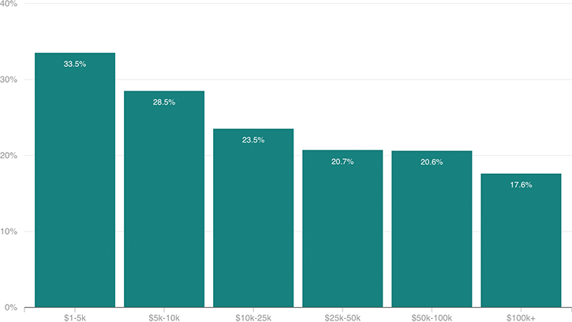

Default Rates Fall As Student Loan Balances Rise
A New York Fed analysis of people entering repayment in 2009 found that, counterintuitively, those with higher student loan balances had lower default rates as of December 31, 2014.
Share of borrowers in default, by original loan amount
